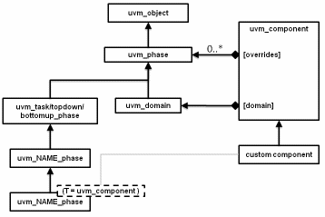

Phasing Overview
UVM implements an automated mechanism for phasing the execution of the various components in a testbench.
| Phasing Overview | |
| UVM implements an automated mechanism for phasing the execution of the various components in a testbench. |
Phasing Implementation
The API described here provides a general purpose testbench phasing solution, consisting of a phaser machine, traversing a master schedule graph, which is built by the integrator from one or more instances of template schedules provided by UVM or by 3rd-party VIP, and which supports implicit or explicit synchronization, runtime control of threads and jumps.
Each schedule leaf node refers to a single phase that is compatible with that VIP’s components and which executes the required behavior via a functor or delegate extending the phase into component context as required.
Execution threads are tracked on a per-component basis.
Class hierarchy
A single class represents both the definition, the state, and the context of a phase. It is instantiated once as a singleton IMP and one or more times as nodes in a graph which represents serial and parallel phase relationships and stores current state as the phaser progresses, and the phase implementation which specifies required component behavior (by extension into component context if non-default behavior required.)

The following classes related to phasing are defined herein
uvm_phase : The base class for defining a phase’s behavior, state, context
uvm_domain : Phasing schedule node representing an independent branch of the schedule
uvm_bottomup_phase : A phase implementation for bottom up function phases.
uvm_topdown_phase : A phase implementation for topdown function phases.
uvm_task_phase : A phase implementation for task phases.
Common, Run-Time and User-Defined Phases
The common phases to all uvm_components are described in UVM Common Phases.
The run-time phases are described in UVM Run-Time Phases.
The ability to create user-defined phases is described User-Defined Phases.
| Phasing Implementation | |
| The API described here provides a general purpose testbench phasing solution, consisting of a phaser machine, traversing a master schedule graph, which is built by the integrator from one or more instances of template schedules provided by UVM or by 3rd-party VIP, and which supports implicit or explicit synchronization, runtime control of threads and jumps. |